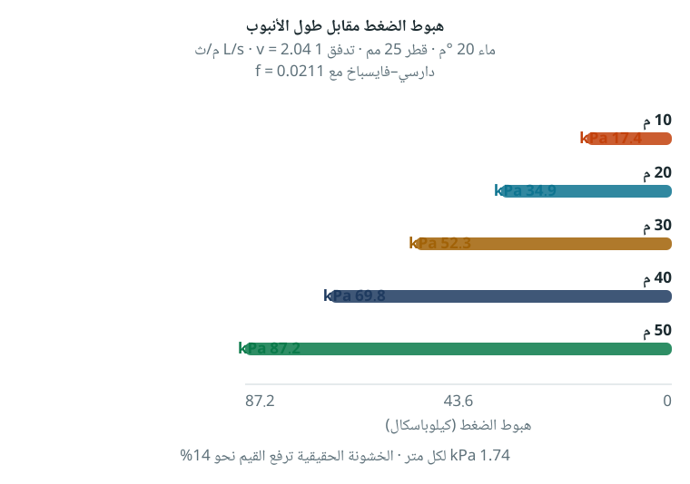

هبوط الضغط في الأنابيب
Pressure Drop
فرق الضغط اللازم لدفع المائع ضد احتكاك الجدار، ويحسبه دارسي–فايسباخ: Δp = f (L/D)(ρv²/2). في 50 م من أنبوب 25 مم بماء بسرعة 2.04 م/ث يبلغ 87 kPa، والخشونة ترفعه نحو 14%.
هبوط الضغط في الأنبوب فرق الضغط بين طرفيه اللازم لدفع المائع ضد الاحتكاك بالجدار. في أنبوب أفقي ثابت المقطع لا يُستهلك الضغط في تسريع المائع بل في التغلّب على إجهاد القصّ الجداري، فيتحوّل جزء من طاقة الضغط إلى حرارة غير قابلة للاسترجاع، ولهذا يُسمّى فقدًا في هذه الحالة.
تحسبه معادلة دارسي–فايسباخ: Δp = f (L/D)(ρv²/2)، حيث f عامل الاحتكاك وL الطول وD القطر وv متوسط السرعة. العامل f دالة في رقم رينولدز والخشونة النسبية ε/D، ويُقرأ من مخطط مودي أو يُحسب من كولبروك–وايت.
في الأنابيب الطويلة يهبط الضغط خطيًّا مع الطول. في 50 م من أنبوب 25 مم بماء عند 20 °م وسرعة 2.04 m/s يبلغ الهبوط نحو 87.2 kPa، أي ما يقارب 0.87 بار؛ وهذا فرق يُترجم إلى كلفة ضخ سنوية، ويُقارن عادة بهبوط المعدّات نفسها.
كيف تعمل الظاهرة؟
على أسطوانة مائع بطول L وقطر D في جريان تام النمو، يتوازن فرق الضغط على المقطعين مع إجهاد القصّ على المحيط: Δp·(πD²/4) = τ_w·(πDL)، ومنه Δp = 4τ_w L/D. إجهاد الجدار نفسه يعتمد على السرعة والخشونة: في الصفحي τ_w = 8μv/D فيعطي هبوطًا خطيًّا في السرعة؛ وفي المضطرب يُضاف إجهاد رينولدزي الناتج عن الدوّامات فيصبح τ_w ∝ v² تقريبًا. الخشونة ترفع τ_w لأنها تزيد التدرّج قرب النتوءات وتولّد دوّامات صغيرة تتبدّد إلى حرارة.
العلاقة بالأرقام
ماء عند 20 °م، D = 25 مم، Q = 1 L/s أي A = 4.909×10⁻⁴ m²، ومنه v = 2.04 m/s وRe = 50,700. بمعادلة بلازيوس لأنبوب أملس f = 0.0211، ومنها Δp/L = f(1/D)(ρv²/2) = 1.74 kPa لكل متر. لطول 50 م: Δp = 87.2 kPa. ولفولاذ تجاري بخشونة 0.045 مم وε/D = 0.0018 يرتفع f إلى نحو 0.024 بحسب كولبروك، فيزيد الهبوط بنحو 14%. والتدفق يتناسب عكسيًّا مع D⁵ عند ثبات فرق الضغط، لأن السرعة وعامل الاحتكاك يتغيّران مع القطر معًا.
مفاهيم متقاربة
يُخلط بين هبوط الضغط والفقد. هبوط الضغط Δp قد يكون قابلًا للاسترجاع إذا سببه تغيّر ارتفاع أو تسارع كما في فنتوري؛ أما الفقد فهو الجزء غير القابل للاسترجاع الناتج عن الاحتكاك. في أنبوب أفقي ثابت المقطع يتساويان عدديًّا، ولهذا يسهل الخلط. والخلط الثاني: إهمال الخسائر الموضعية في الانحناءات والصمامات والمصافي، وتُضاف بمعامل K أو بطول مكافئ Leq = K·D/f لا تُهمل. والثالث: استخدام عامل احتكاك الصفحي 64/Re عند Re = 50,700، وهو خطأ يخفض الهبوط إلى الربع تقريبًا.
حدود التطبيق
المعادلة صالحة لجريان مستقر، مائع نيوتوني، أنبوب تام النمو، وسرعة لا تقترب من سرعة الصوت في الغاز. عند الانضغاطية يلزم استخدام الكثافة المتغيّرة ومعدّل التدفق الكتلي. المقاطع غير الدائرية تحتاج قطرًا هيدروليكيًّا، ونتائجها أقل دقة في الزوايا الحادة. مدخل الأنبوب والانحناءات تُدخل اضطرابًا يجعل f أعلى في أول عشرين قطرًا. وفي السوائل اللانيوتونية أو الجريان بحبيبات عالقة يفشل النموذج كليًّا. كما تزيد الخشونة مع التقادم والترسّبات، فقيم التصميم تُؤخذ من جداول التشغيل لا من حالة الأنبوب الجديد.

| الكمية | القيمة | المصدر |
|---|---|---|
| هبوط الضغط في 50 م من أنبوب 25 مم عند 1 L/s | 87.2 kPa | [1] |
| هبوط الضغط لكل متر طول | 1.74 kPa/m | [1] |
| عامل الاحتكاك بلازيوس للحالة | 0.0211 بلا وحدة | [2] |
| خشونة الفولاذ التجاري | 0.045 mm | [1] |
| زيادة الهبوط بسبب الخشونة | 14 % | [1] |
المصادر
- 1 Darcy-Weisbach Pressure and Major Head Loss Equation — The Engineering ToolBox. www.engineeringtoolbox.com/darcy-weisbach-equation-d_646.html · اطُّلع عليه 2026-11-16
- 2 Reynolds Number — The Engineering ToolBox. www.engineeringtoolbox.com/reynolds-number-d_237.html · اطُّلع عليه 2026-11-16
- 3 University Physics Volume 1 — 14.7 Viscosity and Turbulence — OpenStax. openstax.org/books/university-physics-volume-1/pages/14-7-viscosity-and-turbulence · اطُّلع عليه 2026-11-16
استشهد بهذا المصطلح
الصيغتان مبنيتان من بيانات الصفحة نفسها: العنوان والتاريخ ورابط النسخة المنشورة.
هبوط الضغط في الأنابيب — Pressure Drop. (2026). ديوان المعرفة — انفراد. https://infiradev.com/diwan/terms/pressure-drop.html
@misc{pressure-drop2026,
title = {هبوط الضغط في الأنابيب},
titleaddon = {Pressure Drop},
howpublished = {{ديوان المعرفة — انفراد} — مرجع علمي عربي},
year = {2026},
url = {https://infiradev.com/diwan/terms/pressure-drop.html},
urldate = {2026-11-16},
note = {مراجعة علمية: مراجعة آلية — ديوان المعرفة (روابط المصادر + عقد المحتوى + وجود الرسم) 2026-11-16}
}
راجعه: مراجعة آلية — ديوان المعرفة (روابط المصادر + عقد المحتوى + وجود الرسم) 2026-11-16 · 2026-11-16 · آخر تحديث 2026-11-16